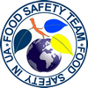

Примітка від VolokonskyTeam: чекаємо на ваші статті будь-якої тематики зі сфери якості та безпечності харчової продукції. Ми розмістимо їх у розділі "Публікації та дискусії"
Підтримка IFS food in UA
Підтримка для харчових підприємств, що готуються до впровадження або впровадили систему безпечності харчової продукції (СБХП) відповідно до вимог будь-якого стандарту на системи якості та безпечності харчової продукції, в тому числі відповідно до вимог стандарту IFS food, v.7.
СТРАТЕГІЧНА МЕТА
командиVolokonskyTeam
встановлено у серпні 2022 |Ukraine
сприяти впровадженню систем якості та безпечності харчової продукції та отриманню харчовими підприємствами сертифікатів відповідності міжнародним стандартам (в тому числі IFS food) та підвищувати можливості просунення української продукції на європейський ринок.
Завдяки чому це має здійснюватись, ви можете побачити нижче. А натиснувши на одне з цих посилань, ви зрозумієте, що ми можемo вам запропонувати:
ЦЕ БУДЕ ДЛЯ ВАС КОРИСНИМ:

CONTACTS
Phone: +380954552516
E mail: office@ifs.pp.ua
SITE MAP
- Main page - ГОЛОВНА СТОРІНКА
- Consult - КОНСУЛЬТАЦІЇ З ВПРОВАДЖЕННЯ СИСТЕМИ IFS FOOD
- Audit - ПІДГОТОВКА ДО СЕРТИФІКАЦІЙНОГО АУДИТУ
- Search - ПОШУК АУДИТОРІВ ТА СЕРТИФІКАЦІЙНИХ КОМПАНІЙ
- Ready - САМОКОНТРОЛЬ ГОТОВНОСТІ ДО СЕРТИФІКАЦІЙНОГО АУДИТУ
- Third party - АУДИТ ПОСТАЧАЛЬНИКА ТРЕТЬОЮ СТОРОНОЮ
- Implementation - ІНФОРМАЦІЯ СТОСОВНО ВПРОВАДЖЕННЯ СИСТЕМИ
- Support - ДОКУМЕНТАЦІЯ СТОСОВНО ПІДТРИМАННЯ СИСТЕМИ
- DSM-RSM - ІНСТРУМЕНТИ МЕНЕДЖЕРА СИСТЕМИ ЯКОСТІ ТА БХП
- Publications- ПУБЛІКАЦІЇ ТА ДИСКУСІЇ
- About us - ПРО НАС
WE CAN
- Зробимо вашу систему якості та безпечності харчової продукції більш ефективною
- Зменшимо витрати на сертифікацію
- Побудуємо "з нуля" систему якості та безпечності для будь-якого підприємства